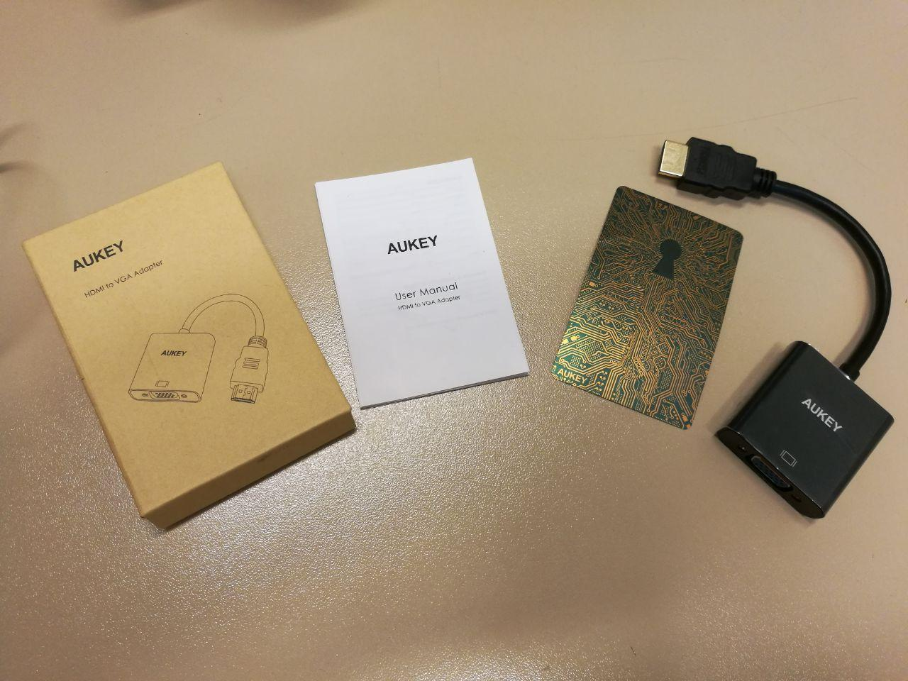

Conversor HDMI-VGA Aukey
Introducción
Hemos adquirido a través de Amazon, un conversor HDMI-VGA debido a que tenemos un portátil que no tiene toma VGA, solo un puerto HDMI y 2 micro-HDMI. Queriamos tan solo compartir lo bien que nos funciona este dispositivo y por lo que recomendamos su compra. 100% compatible con Linux. El conversor viene dentro de una caja de cartón fino, con un pequelo manual, una pegatina y el conversor con el puerto HDMI cubierto por un protector de plástico duro para evitar que se deteriore.

Resultado de xrandr(1):
$ xrandr
Screen 0: minimum 8 x 8, current 3200 x 1080, maximum 32767 x 32767
DP-0 disconnected (normal left inverted right x axis y axis)
DP-1 disconnected (normal left inverted right x axis y axis)
eDP-1-1 connected primary 1920x1080+1280+0 (normal left inverted right x axis y axis) 344mm x 194mm
1920x1080 60.02*+
1400x1050 59.98
1280x1024 60.02
1280x960 60.00
1024x768 60.04 60.00
960x720 60.00
928x696 60.05
896x672 60.01
800x600 60.00 60.32 56.25
700x525 59.98
640x512 60.02
640x480 60.00 59.94
512x384 60.00
400x300 60.32 56.34
320x240 60.05
DP-1-1 disconnected (normal left inverted right x axis y axis)
HDMI-1-1 connected 1280x1024+0+0 (normal left inverted right x axis y axis) 338mm x 270mm
1280x1024 60.02*+ 75.02
1920x1080 60.00 59.94
1280x960 60.00
1152x864 75.00
1280x720 60.00 59.94
1024x768 75.03 70.07 60.00
832x624 74.55
800x600 72.19 75.00 60.32 56.25
640x480 75.00 72.81 66.67 60.00 59.94
720x400 70.08